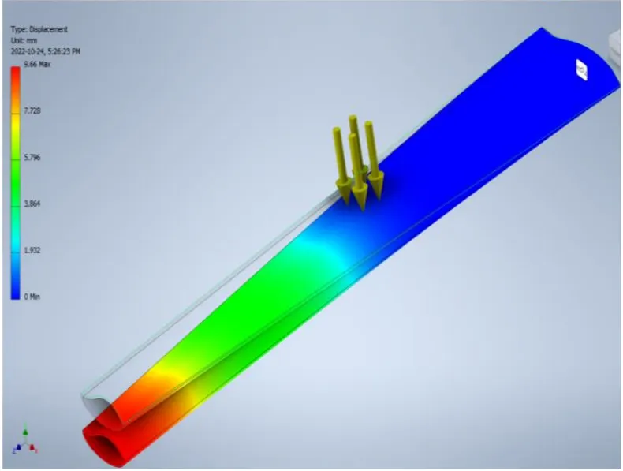

Designed and optimized a compact wind turbine blade for residential rooftop installation in Calgary's high-wind environment — combining aerodynamic analysis, FEA stress simulation, material selection, and manufacturing feasibility into a cost-effective renewable energy solution.

Design a wind turbine blade optimized for residential rooftop installation in Calgary, Alberta — a location with strong, consistent winds but strict constraints on size, weight, noise, and structural durability. The blade had to balance aerodynamic efficiency with long-term reliability in a high-wind, high-variability environment.
The project began with research into current turbine technology, residential installation constraints, and the specific wind characteristics of Calgary. Key design factors included blade length (constrained by rooftop spatial limits), pitch angle (optimized for prevailing wind speeds), and structural integrity under sustained loading and gust conditions.
Several aerodynamic parameters were evaluated to maximize energy capture at residential scale, including blade chord length, the number of blades and their effect on rotor solidity, wind speed and its relationship to aerodynamic forces, air density effects, blade pitch angle for varying conditions, and rotor diameter within the available installation envelope.
Material selection was conducted using the Granta EduPack database, evaluating candidates against criteria including tensile strength, fatigue resistance, density, corrosion resistance, and manufacturability. A weighted decision matrix scored each material across these properties, with the final selection balancing structural performance against cost and availability for residential-scale production.
The blade design was validated through FEA stress simulations in Autodesk Inventor, analyzing deflection under rated wind loads and identifying stress concentrations at the root attachment. The simulations confirmed that the chosen material and geometry met deflection limits while maintaining adequate safety margins under both normal operating conditions and extreme gust scenarios.
The final design is a compact, structurally validated turbine blade optimized for Calgary's wind profile, using materials selected through systematic engineering analysis. The project integrated aerodynamic design principles, computational analysis, and material science into a practical renewable energy solution for residential deployment.